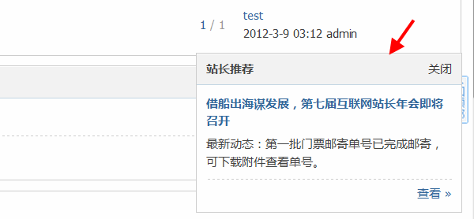
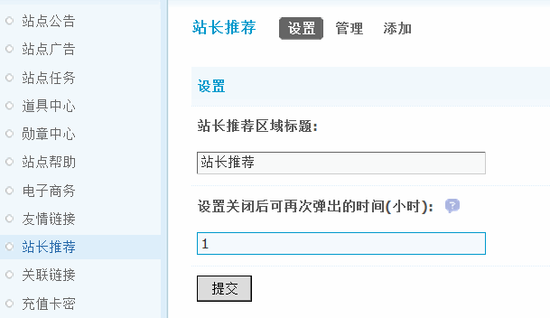
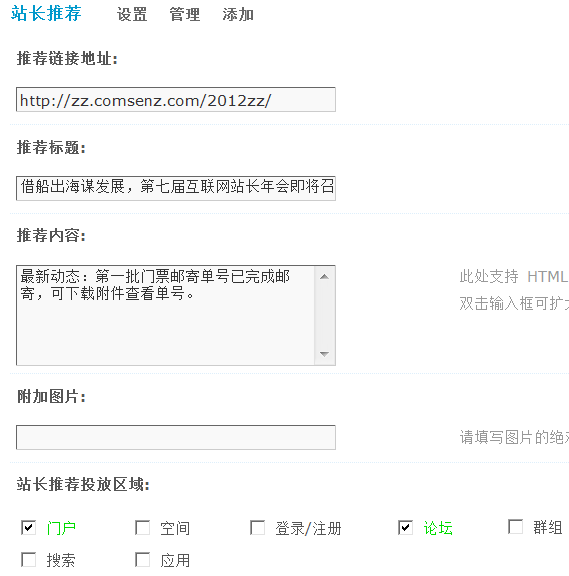
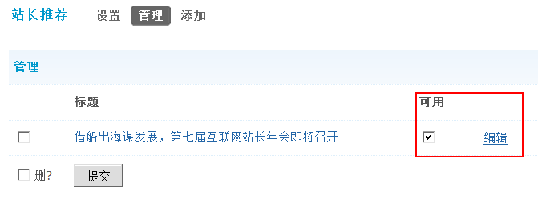
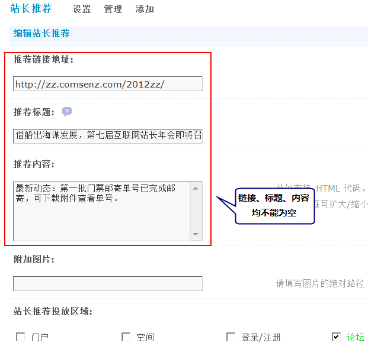

站长推荐
网站运营过程中，站长有时为了对某个重要话题或者某个活动进行重点推荐，都会在网站的醒目位置放置推荐链接、推广海报等，这些都不失为一种好的方法，站长推荐功能，以浮窗形式显示在页面的右下角，既不影响用户浏览页面的其他内容，又能很明显的吸引用户的注意力，使得焦点信息在短时间内迅速得到网站用户的关注。如果网站管理者想为社区就某一事件制造一个讨论高潮或者举办一次抢楼、团购等活动推荐，那么试试“站长推荐”这个功能，效果肯定不错。
下面把此功能详细的介绍下：
展示方式：
站长推荐的设置位置：
操作路径：【后台】=>【运营】=>【站长推荐】
一、站长推荐的设置方法
此处可以更改站长推荐区域使用的标题以及设置关闭后可再次弹出的时间。
站长推荐区域标题：默认为“站长推荐”，您可以设置为您希望的标题。
设置关闭后可再次弹出的时间：0 表示再刷新页面就会弹出。1 表示1 小时后刷新页面才会出现。默认为1，可以设置为您希望弹出的时间
二、添加
此处可以添加站长推荐的链接地址、标题、内容、附加图片和选择投放的区域等，其中链接地址、标题、内容三项为必填。站长推荐的数量最多为 10 条，如果添加了多条推荐，系统会在会员访问站点时，每次随机显示其中 1 条。
添加标签中可以添加一条站长推荐内容。
点击添加后，会显示一些表单内容。其中有：
1)推荐链接地址：该地址为显示该条站长推荐的时候标题超链接所对应的链接地址。
如果链接地址是站内地址则不需要填站点域名，只需要填类似 forum.php?mod=forumdisplay&fid=36 或 forum-29-1.html 即可。
如果链接地址是站外地址则需要填写全部链接，并且不能省略 http:// 如： http://www.comsenz.com
2)推荐标题：设定该条站长推荐的标题，注意其与区域标题的区别（区域标题是整个弹窗的标题，而推荐标题是弹窗中显示的推荐的标题）。
支持 html 代码，使用方法同设置。
3)推荐内容：推荐窗口中显示的主要内容，支持 html 代码，内容的长度（ html 代码不计算在内）上限为 150 个字符。
4)附加图片：可以在该条推荐中显示一张图片，只需要填入该图片的绝对地址。
如：http://www.discuz.net/static/image/common/logo.png
5)站长推荐投放区域：此处设置该推荐显示的页面。
注意如果不设置投放区域该推荐将不会被显示。
三、管理
此处会显示出站内的所有站长推荐内容，如果推荐的内容已经过期，或需要更换，可以在管理处对已经存在的推荐内容进行删除操作。
编辑：点击相应推荐内容的编辑，可以对已经添加的站长推荐内容进行修改。
设置是否可用：在列表中的“可用”栏目中的复选框被勾选的为可用的推荐，前台只显示可用的推荐。如需修改，则勾选希望显示的推荐提交即可。